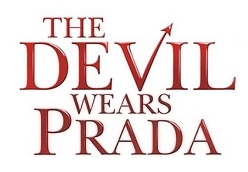

홈 > 브랜드 매거진 > 프라다
프라다
프라다는 아름다움을 익숙한 화려함보다 지적인 긴장감으로 표현하는 브랜드다. 소재와 형태, 절제된 색감은 패션을 단순한 장식이 아니라 관찰과 해석의 대상으로 만든다.
산업 분야 패션·럭셔리 · 공개 등급 매거진 완성 · 브랜드 평가 5 ★


한눈에 보는 브랜드
프라다는 아름다움을 익숙한 화려함보다 지적인 긴장감으로 표현하는 브랜드다. 소재와 형태, 절제된 색감은 패션을 단순한 장식이 아니라 관찰과 해석의 대상으로 만든다.
브랜드 관점
프라다는 아름다움을 익숙한 화려함보다 지적인 긴장감으로 표현하는 브랜드다. 소재와 형태, 절제된 색감은 패션을 단순한 장식이 아니라 관찰과 해석의 대상으로 만든다.
시작과 성장
프라다는 1913년, 창립자 마리오 프라다가 이탈리아 밀라노에 세운 가죽제품 판매 상점에서 출발했다. 1978년 가업을 이어받은 그의 손녀 미우치아 프라다는 세계대전의 영향으로 하락세이던 브랜드를 명품 브랜드로 성장시켰고, 배우자 파트리치오 베르텔리와 함께 오늘날의 프라다 그룹을 이끌고있다.
브랜드 아이덴티티
프라다는 부부경영 체제를 이루며 견고해졌다. 미우치아 프라다는 디자인에 집중하고 그의 배우자 파트리치오 베르텔리는 프라다 그룹의 최고 경영자로서 기업 운영을 전담하고 있다.
둘은 프라다의 수장으로서 서로의 의견을 존중하며 다양하고 도전적인 브랜딩 활동을 펼치고 있다.
제품과 서비스
패션 전공자가 아니었던 미우치아 프라다는 다른 디자이너들보다 더 과감한 소재를 채택했고 참신한 디자인을 이어갔다. 프라다는 바쁜 일상을 살아가는 직장인 여성에게서 영감을 받아 절제미와 지성미를 겸비한 미니멀리즘 디자인을 선보이고 있다.
현재 상태
타임라인
BI/CI 변천사

BI/CI 아카이브BI/CI 아카이브함께 읽을 브랜드
 패션·럭셔리 · 편집 검수샤넬
패션·럭셔리 · 편집 검수샤넬샤넬은 패션을 장식이 아니라 태도와 해방의 언어로 바꾼 브랜드다. 브랜드의 힘은 제품의 고급스러움뿐 아니라 여성의 몸과 생활 방식을 새롭게 해석한 상징성에서 나온다.
 패션·럭셔리 · 편집 검수디젤
패션·럭셔리 · 편집 검수디젤디젤(Diesel)은 1978년 렌조 로소가 이탈리아 브레간체에서 설립한 데님 중심의 컨템포러리 패션 브랜드다. 도발적이고 실험적인 디자인으로 데님 헤리티지를 재해석...
 패션·럭셔리 · 편집 검수자라
패션·럭셔리 · 편집 검수자라자라는 패션을 예측하기보다 시장의 반응을 빠르게 읽고 다시 매장으로 돌려보내는 브랜드다. 트렌드를 길게 기획하는 대신 고객 반응과 유통 속도를 무기로 삼아, 패션을...
 패션·럭셔리 · 매거진 완성빅토리아 시크릿
패션·럭셔리 · 매거진 완성빅토리아 시크릿빅토리아 시크릿은 속옷을 기능적 제품이 아니라 무대화된 판타지와 자기표현의 이미지로 포장한 브랜드다. 브랜드는 제품보다 쇼, 모델, 시각적 연출을 통해 소비자가 상상...
 패션·럭셔리 · 편집 검수구찌
패션·럭셔리 · 편집 검수구찌구찌는 이탈리아의 패션·럭셔리 브랜드로, 소재, 실루엣, 로고, 컬렉션 운영이 취향과 지위 신호를 만드는 영역입니다.
 패션·럭셔리 · 매거진 완성루이비통
패션·럭셔리 · 매거진 완성루이비통루이비통은 여행가방에서 출발했지만, 이동의 기능을 럭셔리한 삶의 상징으로 확장했다. 브랜드의 헤리티지는 물건을 담는 도구가 아니라 이동하는 사람의 취향과 지위를 표현...
 패션·럭셔리 · 편집 검수조르지오 아르마니
패션·럭셔리 · 편집 검수조르지오 아르마니조르지오 아르마니(Giorgio Armani)는 1975년 밀라노에서 설립된 이탈리아 럭셔리 패션 하우스이다.
 패션·럭셔리 · 편집 검수젠틀몬스터
패션·럭셔리 · 편집 검수젠틀몬스터젠틀몬스터는 2011년 서울에서 김한국이 창립한 한국 럭셔리 아이웨어 브랜드입니다. 선글라스와 안경테를 중심으로 전개하며, 서울 기반의 아이아이컴바인드가 운영합니다....